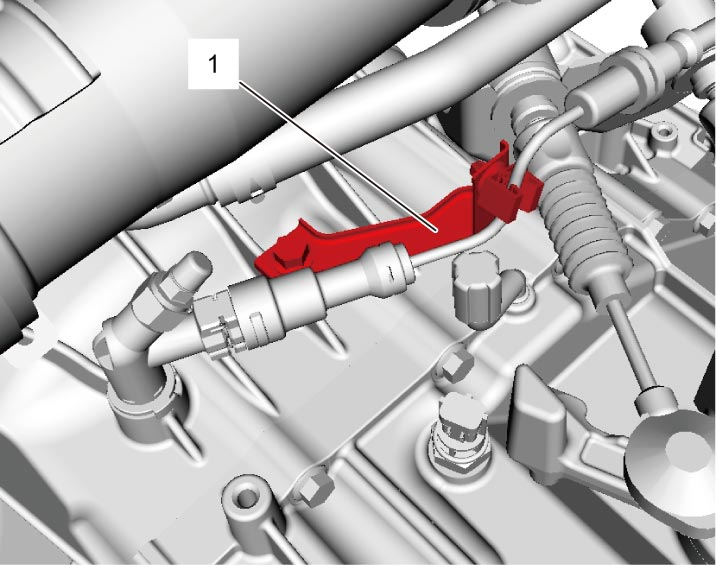
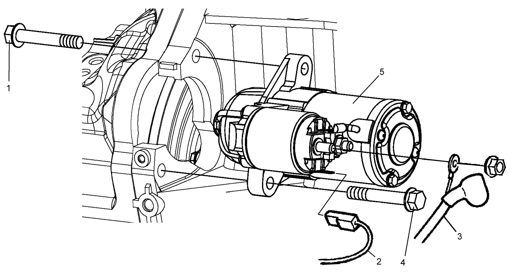

1I
| Starting Motor Removal and Installation |
NOTE:
For ENG A-STOP model, if starting motor assembly is replaced with new one, perform “Starter Driving Counter Reset” referring to Procedure after Starting Motor Replacement.
Removal
1)Disconnect negative (–) cable at battery.
2)For 4WD model, remove intake manifold. 
3)For M/T model, remove clutch fluid pipe bracket (1).


 "Expand image")
4)Remove starting motor mounting bolt (upper side) (1).
5)Hoist vehicle.
6)Disconnect magnetic switch lead wire (2) and starting motor cable (3) from starting motor.
7)Remove starting motor mounting bolts (lower side) (4).
8)Remove starting motor (5).

 "Expand image")
Installation
Reverse removal procedure noting the following point.
•Tighten starting motor cable nut to specified torque.